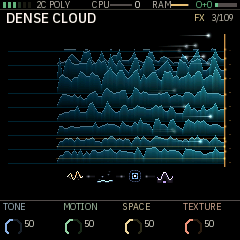

FM1 Phase 2
A polyphonic synth voice for the FM-1 built from Mutable Instruments' open-source module code: Braids oscillators, Rings, a filter, Tides, Peaks, Grids and function generators, a modulation matrix, delay, reverb, chorus, and the Clouds granular processor on the second core.

Open the installerPre-release. Built and checked on a computer; not yet tested widely on an FM-1. Use Chrome or Edge on a computer, with the FM-1 plugged in by USB (no hub) and any other MIDI software closed.
What's in 2.22
- New in 2.22: mono presets go back to a key still held when you let go of the newest.
- 2.21: a fix for notes hanging on sustained presets (not yet confirmed on an FM-1), and ARP HOLD no longer stays on after a restart.
- 2.20: the keys keep playing after two or three taps on SEL or ARP turn the arp or chords off.
- 2.19: each knob can drive up to 8 parameters with its own curve (the presets don't use it yet), and 15 user save slots (were 64; anything in 16-64 is no longer reachable).
- 2.18: presets play at the note you press.
- 125 presets. Presets 1–16 are granular textures (knobs TONE, MOTION, SPACE, TEXTURE); 17–32 are modulation-led instruments; 33–48 are the classic sounds you would expect on a synth, most with subtle movement. From 17 on, K1 is MORPH, one knob that moves many parts of the sound at once.
- HOME shows the sound as a spectral ribbon; every module page has a live picture.
- Clouds runs on the second core.
Known issues
- GLASS BELLS and MODEL DIAL are out of tune in places.
- FROZEN PAD is silent if K4 is turned up before a note is played.
Source and licences
The firmware as a whole is GPL-3.0; its source is at github.com/JoshCowley/FM1-Phase-2. It contains Mutable Instruments' MIT-licensed code (notice). The installer and update loader come from fm1-base and felucca-bsp.
Package: fm1ph2-2.22.fwsc · SHA-256 3b666a4026bbe776721e11b0e83d58966b58b5fb28e430a0d49a9dffd64fcc6a